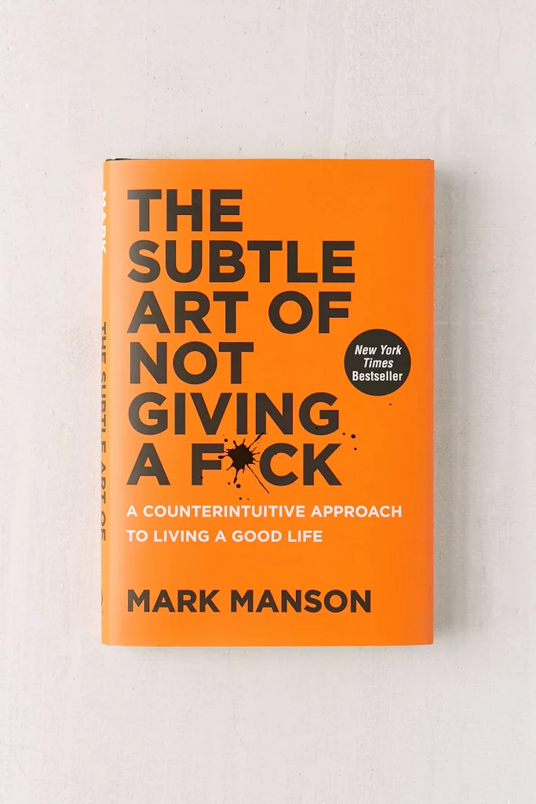

-
The Great Gatsby by F. Scott Fitzgerald

"The Great Gatsby" is a classic novel by F. Scott Fitzgerald that explores themes of wealth, society, and the American Dream in the 1920s.
-
To Kill a Mockingbird by Harper Lee
.jpg)
Harper Lee's "To Kill a Mockingbird" is a profound novel that deals with serious issues like racial inequality and moral growth in the Deep South of America.
-
1984 by George Orwell

George Orwell's "1984" is a dystopian novel that presents a chilling depiction of a totalitarian society under constant surveillance. The story follows Winston Smith, a man struggling to retain his individuality in a world where the Party seeks to control every aspect of life. The book is a stark warning about the dangers of oppressive governments and the loss of personal freedoms.
-
The Subtle Art of Not Giving A Fuck by Mark Manson
Mark Manson's "The Subtle Art of Not Giving a F*ck" is a refreshing self-help book that challenges conventional wisdom about positivity. Manson argues that we should focus on what truly matters to us and let go of trying to be happy all the time. Through candid humor and relatable anecdotes, he emphasizes the importance of embracing life's challenges and setting realistic expectations.
-
Fahrenheit 451 by Ray Bradbury

In a society where books are banned and "firemen" burn any that are found, this novel explores themes of censorship, knowledge, and the power of literature.